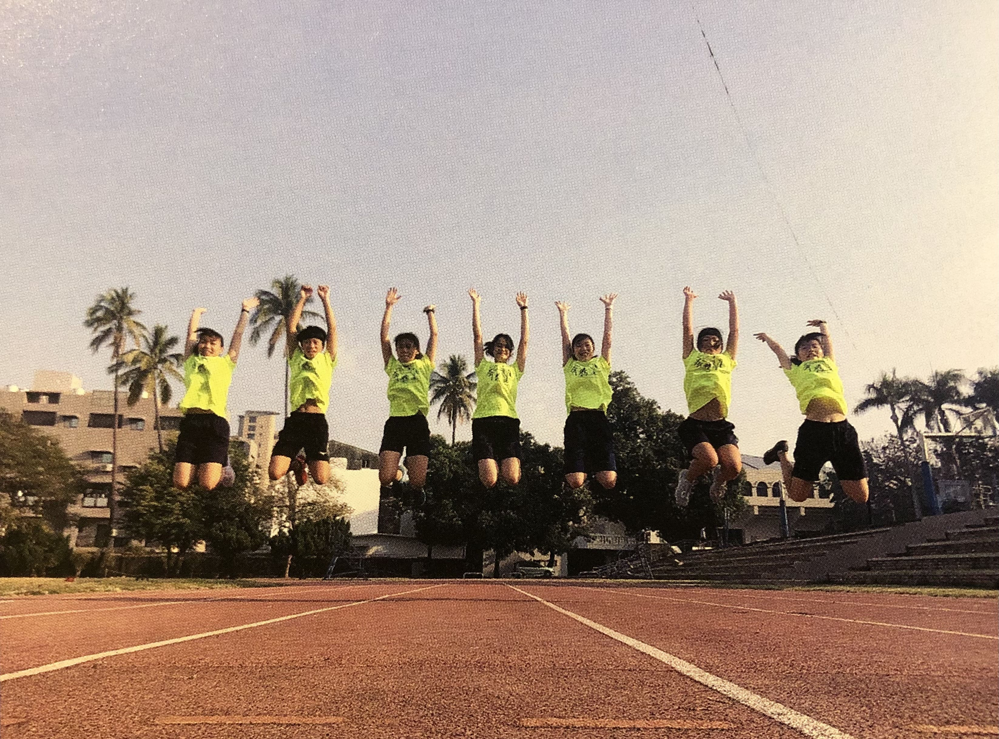

ABOUT ME

我是曾宇璿
SLOGAN:隨興就是等我睡醒再說
目前就讀中原大學資管系大二，很希望有花不完的錢，希望人可以每天吃一餐就好，不然每天要想吃甚麼好累喔，就跟想自我介紹一樣難
我有一個雙胞胎弟弟，我覺得他長得跟我一點也不像，比較像家裡的狗，我家根本沒養狗。
我很喜歡運動，因為高中校園很小，所以下課去跑步都很方便，可是上了大學發現體育館太遠了吧，然後就比較少跑步了，好糟糕
Hard-working, creative and proactive.Major in Information Management.
Ambitious, eager to keep growing and evolving in my profession.
Constantly developing new skills and abilities.
EDUCATION
SKILLS
PROGRAMMING
JAVA
PYTHON
LANGUAGE
ENGLISH
GERMAN
TAIWANESE
EXPERIENCE
德國遊學
2019年暑假，參與學校本位國際教育計畫，到德國當交換生。
這是我首次踏上歐洲，覺得德國柏林這個城市很特別，像一個歷經風霜後不失優雅、智慧的古城，很開心能夠在學生時期就造訪，這是第一次去到柏林，但我想，絕對不是最後一次。
"柏林的地鐵站裡放眼望去可以看到10隻老鼠"


教育部青年署感動地圖計畫
團隊名稱:就是吃吃吃
大一那年暑假，想和朋友們熱血的度過，於是申請了教育部的經費，獲得了7萬元的補助。為期10天的企劃，走訪了北中南，一共訪談了10位總鋪師。我們希望透過各個總鋪師的故事和經驗，讓大家更了解「辦桌」這項傳統文化是如何從數百年前不斷交織發展成如今的樣貌。
"最主要還是吃吃吃"
中原創發中心CEO培訓計畫
創業的開頭是問題解決，在思考「問題」與嘗試「解決」的過程中，透過與成員之間與前輩之間的想法激盪，無論未來是否創業成功，這樣的經驗都是最珍貴的。
"但我退出團隊了嗚嗚"
全人關懷獎
團隊名稱:海好有你
大一下學期，和同系朋友組成團隊，前往桃園市新屋區蚵間與海岸巡護隊一同淨灘。參賽學校的全人關懷獎，忘記拿到什麼等第。
"但拿到了一些錢"
國際生學伴
大二上學期擔任學校的國際生學伴，帶領交換生認識中原、領略台灣的暖與美。擔任學伴是除了直接出國留學以外，最經濟實惠， CP值最高的事吧，期許自己能藉由這次的機會，結交外國朋友，與相似年齡但不同文化、成長背景、說著不同語言的人交流。
CLUB
田徑隊

從小跑到大，小時候討厭擦防曬，到了高中變超黑(完全沒關聯)
很多人覺得田徑很枯燥乏味，每天在操場上曬著可怕的大太陽。但對我來說卻不然。當個運動員是件很幸福的事，除了享受在賽場上那0.01秒差距的快感，我也學會不斷精進自己，力求突破，在運動與課業相輔相成。求學時期的挫折，能夠以樂觀又正面的運動家態度去面對，從失敗中找到問題並解決。這種愛挑戰的韌性和抗壓性，都是從小練田徑帶給我最好的禮物。"四肢發達真的不會頭腦簡單。"
管樂團
其實也從小吹到大
主修長號，上了大學吹樂團的機會越來越少，怕以後出社會會太想念所以加入管樂團。中原管樂裡面一堆帥哥美女，超讚拜託贊助我們加入我們。附上去年全國音樂比賽音檔 曲名:落夏流穗，請享用